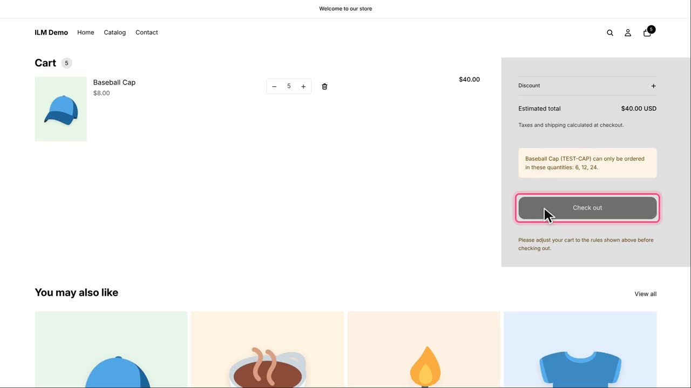
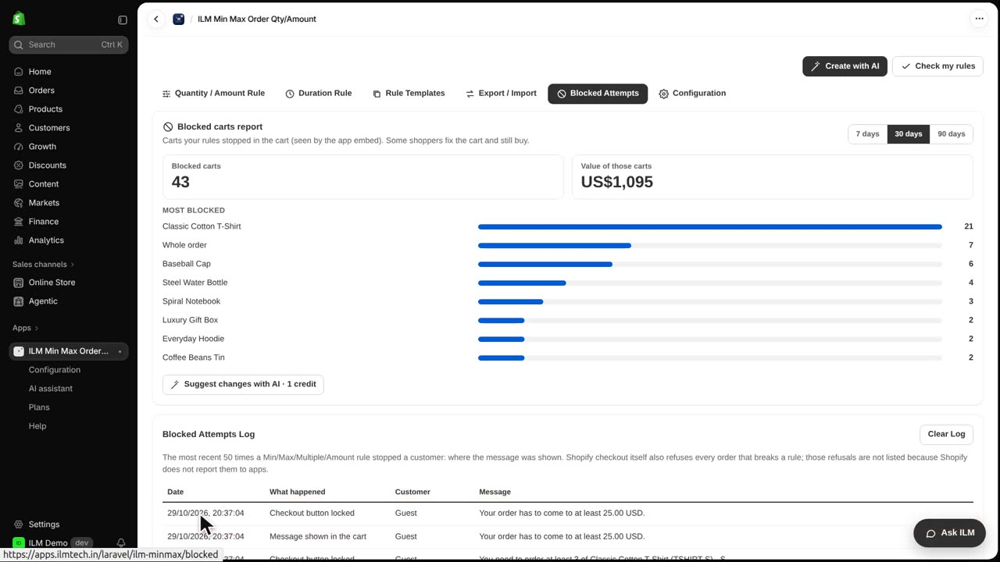
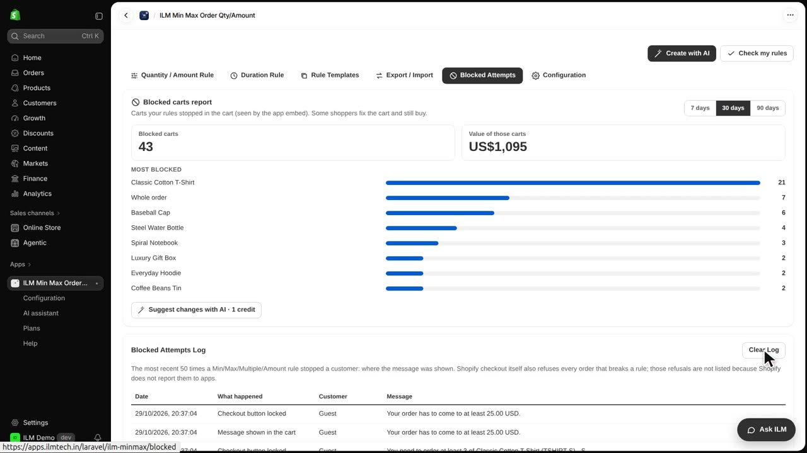

The Blocked Attempts log shows the latest times your rules stopped a shopper in the cart. In the demo store, the Baseball Cap is sold only as six, twelve or twenty-four. This log helps you see exactly when a rule blocked a shopper and what message they saw. Today we will look at a shopper who tried to buy five caps.
A shopper puts five Baseball Caps in the cart. The cart shows the message and locks checkout.

In the app, open the Blocked Attempts tab. The newest line is this cart: the date, what happened, the customer, and the exact message the shopper saw.

Shopify checkout also refuses every order that breaks a rule, but Shopify does not tell apps about those, so they are not in this log. Clear Log empties the list.
